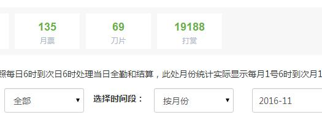
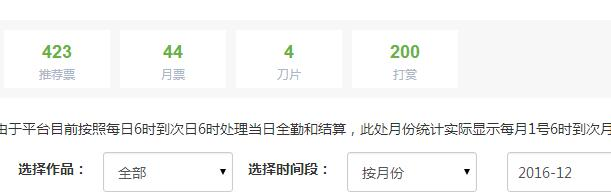

第二百一十章 是奈叶哟不是暴君
“高町”，拆开的字月姬上辈子都见过，但是组合起来的话却觉得熟悉而又陌生，催眠自己去挖掘记忆的最深处的影像，月姬终于知道为什么会觉得“高町”两个字眼熟了。
有一个九岁时候开启了魔法天赋，十岁加入时空管理局，虽然实际职位可能并不是有多高，但是在业界被人称之为时空管理局的三巨头，有白色暴君之称的少女的名字正是【高町奈叶】，同时，月姬所遇到的那个孩子的中文译名恰好也可以翻译成这样。
两个人究竟是不是一个人这点有待考量，两者有着一样的名字和接近的形象，只不过，月姬所遇到的奈叶父亲早已经过世，在她还很小的时候，除此之外，她们都有着一个叫做桃子的妈妈，经营一家叫做翠屋的咖啡厅，除了咖啡厅，家里还有有一个道场，奈叶的哥哥恭也在经营，而她还有一个姐姐叫做美由希，在念大学。
这位奈叶的家庭背景大致上和月姬挖掘出来的记忆里那位的具体家庭背景对上了，虽然年龄对不上，但是这是真实的世界，而不是任务副本，哪有那么巧刚好遇到九岁的奈叶。
认为这孩子很可能的未来暴君的月姬对这孩子更是上心了，奈叶九岁时候一觉醒就有着AAA级的魔力，那么现在应该应该更强了。有魔力的话治疗蓝子和优纪并不是很难的问题，但月姬并没有贸贸然的去向奈叶求助，搞错了就尴尬了，而且，能治疗蓝子和优纪是好事，但是如果能查出在这个缺魔的星球上为什么奈叶的身体里会拥有那样的庞大的潜能，进而让自己重获魔力不是更好吗。
然而，和奈叶的接触中月姬发现，这个奈叶身上并没有魔力反应！而且她身上并没有那个红色珠子样子的魔导器，同时也并不认识疾风和菲特这两个官配的姬友。
世界有着无穷的可能性，也就是说，这是所谓的异时空同位体吗？这是奈叶没有遇到尤诺进而开启魔法人生的世界！？
这样或许也不错，月姬暂时并没有想要和时空管理局接触的打算，而且这个世界也说不定是管理局在建立中夭折的世界。
虽然在这种缺魔的星球上重获魔力的方法还不明确，但是月姬的食欲不会骗她，知道这孩子身上蕴藏着巨大的潜能，确定了这点就够了！
如果这孩子真的是那个高町奈叶的话，那么教她魔法，让奈叶为蓝子和优纪延续生命也是可行的！
然而，月姬隐晦传授奈叶几个幼稚园孩子都能用的魔法后，她愕然的发现，明明有着那样庞大的潜质，但是这个奈叶却无法使用魔法！！！
是力量体系的问题？但是亚特兰蒂斯教的力量可不是那些应用面狭窄的体系，而是泛用型的力量。
是这个星球本身禁绝超凡力量？但是圣诞夜弥漫整个东京，甚至应该是弥漫全球的力量可不是错觉！
或者是谁封印了奈叶的力量？有这个可能，但极度缺魔的她也没有能力去查清楚！
然后，月姬只能暂时将这孩子放下，继续踏上寻找地脉的路途。
虽然疾风和菲特两个孩子让月姬稍微有些在意，毕竟在以前，她们也是月姬比较喜欢的人物，但是没有遇上，月姬也不会刻意的去寻找，不知从何找起不说——这里是东京，不是完全摸不清楚具体是哪里的海鸣市——从奈叶的年龄算，已经过去了三年，现在，已经什么都晚了吧，无论是菲特母亲复活艾丽西亚的野望，还是夜天之书的暴走。
或者，期待这是延迟了三年的世界？
这种幼稚的想法月姬可不会有！
以后，如果恢复力量的话，或许可以试着去查查看吧，但是现在，月姬只想找到一个地脉能量溢出的地方补充下施法的力量，想想怎么去救蓝子和优纪！
“啊呀啊呀，月姬小姐真的是帮了我们大忙啊！”
令人讨厌的声音响起，路边停着的车的窗户打开，露出了菊冈那张吊儿郎当的脸，这家伙不止派人出来盯梢，自己也就在边上待命，他手上拿的蛋糕月姬认得，是桃子最新开发的自信之作，月姬吃过，味道确实很好。
“既然你们真的帮我弄到了一间无菌室，我自然要投桃报李了。”月姬耸了耸肩，茅场给的权限对她而言可有可无，“要查查里面还有什么吗？”月姬将挂饰从口袋里取出来递了过去，“你们也很在意吧？”
“月姬小姐这话说的……可真是让我心虚啊。”菊冈摇头笑道，他打开车门从车上下来，将这个存储器接过来后插在自己的手机上浏览里面的资料，除了【希兹克利夫】这个账号，里面还说了下有三百名玩家的被转移到了ALO里这件事，似乎真的是茅场知道须乡在做的事情，希望这位大小姐出面解决而做的准备。只不过，聪明的大小姐在拿到这个前就猜出了事情的真相，并且因为种种巧合被他们委托参与其中，以不是很大的权限巧妙的利用系统的规则对最高管理员进行钳制，完美的拯救了三百名玩家。
“确认完毕，再次感谢您的协助月姬小姐。”将挂饰递了回去，菊冈收起吊儿郎当的态度郑重的对着月姬鞠躬道谢，“您如果有什么需要的话，可以联系我，我会尽力帮您完成。”
对方与茅场毫无关联，这点菊冈向神代有确认过，在SAO之前，茅场是绝对不认识这个少女的，也就是说，这个少女和茅场的联系是在游戏里建立了。法律不追究SAO里全体玩家在生命被威胁的时候所作出的任何事，所以他就没必要刨根问底的探究大小姐究竟是不是那个【格尼薇儿】。
菊冈并没有追究第一次找对方的时候为什么没有说出神代凛子知道茅场下落这件事，作为这个大小姐的相关者，绀野蓝子突然病危的消息他也知道。原本大小姐或许真不知道茅场的下落，会说神代凛子知道，应该是对方从被拘禁的时候在茅场的只言片语里猜测出来的，因为绀野蓝子的关系，对方才冒险用那种不确定的消息来框他们假想课。
不过，幸运的是，那家医院在进行的实验，Medicuboid设备的提供者背后恰好有他们的影子，调用一些能量增加一名试验者并不是很耗费成本的事情，他们也确实需要收集更多样性的实验数据，所以正好做一做顺水人情。
“我记下了，那么再会！”
月姬摆摆手并没有拒绝对方的好意，虽然不见得用得到或者有用，但是总比没有好。
……
【晚上可能还能再更新一章，前几天说的抽空加更……另外，这几天是双倍月票……啊~~~也就是说马上又要面临加更了！】【这孩子是奈叶没错，但是是《永恒之恋曲》的奈叶的，所以老爹已挂。然后疾风和菲特呢，还在考虑怎么正常的衔接时间线】